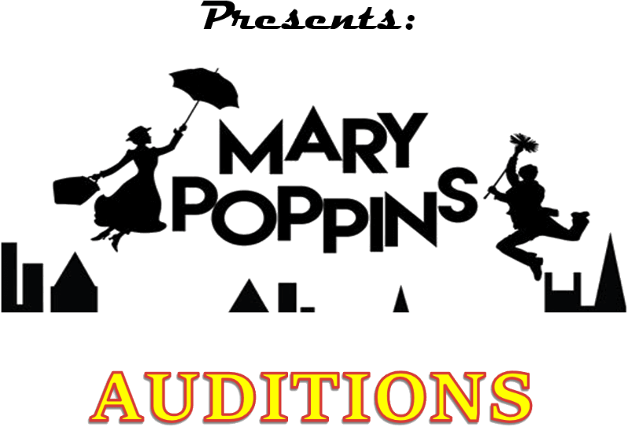
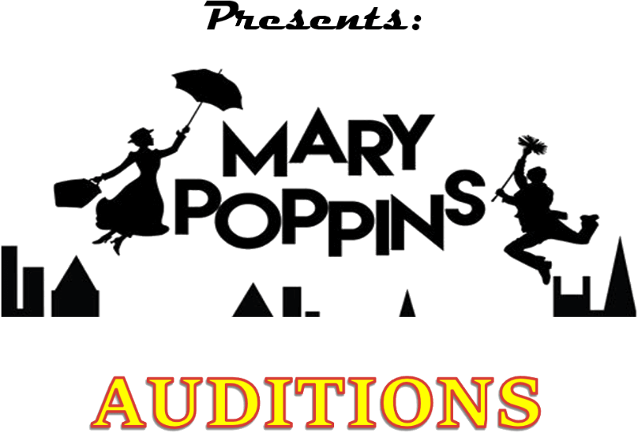

June 2nd & 3rd at Living Hope Restoration Branch
Friday 6:00 pm - 8:00 pm / Saturday 10:00 am - 12:00 pm
2425 S Crysler Ave, Independence, MO
and
June 9th & 10th at Center Place Restoration School (CPRS)
Friday 6:00 pm - 8:00 pm / Saturday 10:00 am - 12:00 pm
819 Waldo Ave, Independence, MO
Call Backs at CPRS 12:30 pm - 4:00 pm
Call backs will be posted on CPCT's website & Facebook page.
Remember, if you are not called back, that doesn't mean you are not cast in the show, it may mean that your part has already been decided upon.